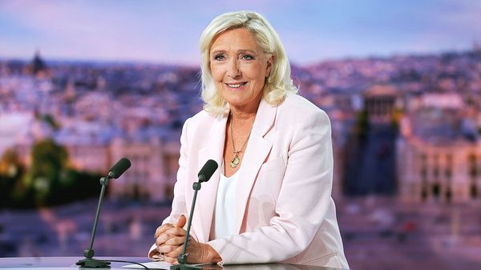

Jul 09, 2026 05:23 AM | PARIS

FOR OVER half a century, a member of the Le Pen family has stood at every French presidential election bar one. Then, after a court in 2025 banned Marine Le Pen, the leader of the populist-right National Rally (RN), from running for elected office for five years, it had looked as if the presidential vote next year would mark the end of a dynastic era.
But on July 7th, in an unexpected twist, the court of appeal in Paris upheld Ms Le Pen’s conviction for the misuse of European Parliament funds for party ends—yet lightened her sentence, freeing her to run. Hours later Ms Le Pen announced that she, not Jordan Bardella, her 30-year-old lieutenant, would make a bid for the presidency after all.
The RN leader’s decision ends 15 months of uncertainty, and sets France up for a highly unusual election. In its ruling, the court of appeal handed her a three-year jail sentence; two are suspended, and one is to be served with an electronic ankle tag. Crucially for Ms Le Pen, the court also shortened her ban and ruled that she had already served the ineligibility penalty.
In announcing her candidacy, Ms Le Pen said that the ban had posed “an enormous democratic problem” and that its ending changed everything, enabling “the French people to judge”. That ruling, in effect, took the political decision out of the judges’ hands and put it firmly into hers. Ms Le Pen continues to claim that she is innocent. She is now taking her case to the highest court, the Cour de Cassation, in part to contest the requirement that she wear a tag (which will not be imposed while the appeal is under way). That court says it could review her case before the election next April and May. If it rejects her appeal, she will have to campaign while wearing the tag.
For the RN, her decision brings clarity and will allow the party to begin its campaign proper. Ms Le Pen will have the authority to shape its direction, take decisions on which there is policy disagreement (she wants to reduce the legal minimum pension age for some workers to as low as 60, from around 63; Mr Bardella is less sure) and keep the party’s identity as a populist outfit that promises to defend ordinary working families. She is a deputy for a constituency in the mining basin of northern France.
Ms Le Pen’s candidacy, however, will not resolve all tensions within the party. Mr Bardella, who had for months geared himself up to stand for the presidency in her stead, is now relegated back into second place. The young RN president has been pushing a different electoral strategy—based on marrying the party’s traditional working-class base and its politics of indignation to a middle-class electorate—by sounding more fiscally responsible and business friendly. The pair insist that they will work together seamlessly. Indeed, the day after the verdict they made a joint trip to a market in rural France. Ms Le Pen described them as a “ticket”, and confirmed that she would make him her prime minister if she wins the presidency. But over the coming months such differences will inevitably strain the tie.
Ms Le Pen now begins her campaign with a handsome lead: she is on 36% in first-round voting, according to an Ifop poll conducted after the verdict, well ahead of either 19% for Edouard Philippe or 15% for Gabriel Attal (two of President Emmanuel Macron’s former prime ministers), depending on which of them is tested. In the run-off, polls suggest she has a chance of winning and doing just as well as Mr Bardella would have. Ms Le Pen remains a fearsome campaigner, with three presidential bids and bitter lessons learned behind her. One of France’s most popular figures, the RN leader will draw support from those who think that it is—at last—her time. “She will be very hard to beat,” says a centrist figure.
Even so, polls nine months ahead of voting are seldom an accurate indicator of the final result. It remains unclear who she would be up against in the broad centre; at the moment both Mr Philippe and Mr Attal have formally declared their candidacies and are out campaigning. Ms Le Pen lacks the freshness and sense of renewal that a Bardella candidacy would have brought the party. Above all, the prospect of a leading presidential contender, however popular, possibly campaigning under house arrest with an electronic ankle tag puts France in uncharted territory.
The opposition has lost no time condemning Ms Le Pen’s decision to stand, and reminding voters that she has now been found guilty by two courts, even if the second conviction is suspended by her latest appeal. Out on the streets the day after the verdict, with Mr Bardella at her side, a defiant Ms Le Pen declared that voters “know full well” that the accusations against her “do not deserve a criminal conviction”. Mr Attal accused her of “Trumpian rhetoric”. Playing the victim may go down well with her base, which has long suspected that the judges are out to get her. But it could make it more difficult for her to widen her appeal. ■
To stay on top of the biggest European stories, sign up to Café Europa, our weekly subscriber-only newsletter.